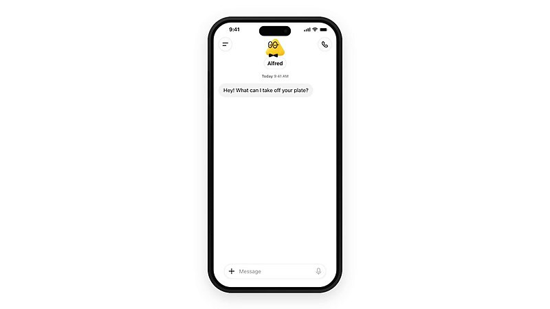

AI 日报 · 10月11日
开放模型遇上 Agent 流量：能力供给与使用边界同步扩张
Reflection AI 解释 Beam 的训练与开放权重计划，No Priors 访谈讨论企业为何想掌握模型。Vercel CEO 分享其平台上的 Agent 流量数据，产品团队则继续把任务委托、域名购买和个人工作流交给 Agent。
开放权重
Agent 流量
任务委托
GitHub Trending
7
Builder 动态
4
今日上榜项目
3
官方资料
1
公开视频
今日要点
Reflection AI 介绍首个 Beam 模型：5010 亿总参数、每个 token 激活 230 亿参数，采用稀疏专家混合架构。官方称权重、技术报告与模型卡计划在 10 月稍晚公开；目前仍在最终红队测试和评估，不能把早期登记当成已可下载。
Vercel CEO Guillermo Rauch 称，其网络过去 30 天 58.18% 的流量来自机器人，超过 60% 的部署由 Agent 发起。这是他公布的平台内部口径，不能外推为全网比例；同一周 Vercel 允许 Agent 在 CLI 中寻找域名，但最终购买仍须用户确认。
深度对话
Misha Laskin：开放权重模型为何要把预训练和强化学习一起做
No Priors 于 10 月 9 日发布与 Reflection AI 联合创始人兼 CEO Misha Laskin 的访谈。以下是嘉宾观点；模型能力与成本对比仍应参照公开评测和实际部署。
从后训练研究转向端到端建模
Laskin 说团队起初希望在已有开放底座上扩大强化学习，后来认为预训练与后训练高度耦合，必须自己建设两端。Reflection 官方资料也将 Beam 的能力归因于预训练、训练环境和大规模强化学习共同投入。
成本与模型控制是企业选择题
他认为高用量企业可能更愿意持有并定制模型，而不是持续租用推理能力。这是他的商业判断，并非已经发生的行业份额变化。
开放与安全需要分别验证
访谈主张开放模型有助于更多研究者发现安全问题；Reflection 同时表示 Beam 正进行最终红队测试。开放权重并不自动等于安全，部署方仍需看模型卡、许可和运行控制。
资讯精选
官方模型与产品更新
Reflection｜Beam 仍处早期开放阶段
官方说明写明 Beam 为 5010 亿总参数、230 亿激活参数的专家混合模型；预训练使用 23.8 万亿 token，并披露强化学习运行超过 1 亿次 rollout。上述训练量和性能均为厂商披露，权重与完整技术报告尚待发布。
Vercel｜Agent 可用 CLI 选购域名
Vercel 10 月 9 日更新 CLI：Agent 可搜索域名、查询价格并发起购买流程；实际付款需要用户在交互终端或控制台核对价格、续费选项和联系人信息后确认。
OpenAI｜订阅额度进入合作工具
OpenAI 的 DevDay 回顾确认，符合条件的 Plus 与 Pro 用户可在包括 Devin 在内的参与工具中使用 ChatGPT 订阅额度。合作范围、额度和资格以官方说明为准；这不意味着所有 Devin 功能都免费。
Builder 动态
七条来自模型、产品与基础设施现场的观察
Thibault Sottiaux｜Dots 可以委托 Codex
OpenAI 的 Sottiaux 指向 Dots 更新。被引用的发布帖说明，Dot 可在 Codex 新开工作并继续已有任务，同时参考聊天、Codex 任务和自动化上下文；原帖配有手机界面演示。

Nan Yu｜连 Agent 提示词也开始补全
OpenAI 产品负责人 Nan Yu 说，自己喜欢桌面端的 Composer predictions：从手写代码、代码补全，再到提示 Agent，现在连给 Agent 的下一句话也能获得建议。这是个人体验分享。
Madhu Guru｜开放权重不是降价唯一原因
Meta AI 的 Madhu Guru 认为，单位智能价格下降还来自小模型蒸馏、基础设施效率与模型供应商竞争；开放权重模型为这一趋势助力。原帖是对成因的判断，不是量化归因研究。
Guillermo Rauch｜公布 Vercel 的 Agent 流量口径
Rauch 称过去 30 天 Vercel 网络 58.18% 流量来自机器人，超过 60% 部署由 Agent 发起，Vercel 自有文档页最高有 83% 页面浏览来自 Agent。三项指标的范围不同，均是其平台数据。
Guillermo Rauch｜Agent 触及域名购买
Rauch 观察到 Agent 通过 CLI 购买基础设施，并宣布将流程扩展到域名。Vercel 官方更新进一步说明，最后的交易确认仍由用户完成。
Aaron Levie｜预测后台 Agent 将消耗更多 token
Box CEO Levie 预计，后台执行和多 Agent 协作会让 token 消耗远超逐条提示式聊天，并给出 1000 倍的设想。这是前瞻预测，不是已测量的市场使用量。
GitHub Trending
今日上榜项目


根据 10 月 11 日 GitHub Trending 实时榜单整理；星标、分叉和语言为本次 GitHub API 快照，数字会持续变化。
今日思考
Beam 提醒我们，模型的权重是否可获得、推理效率和部署控制是不同问题；Vercel 的平台数据提示，Agent 已是一些基础设施的重要使用者。产品应分别核对模型可用性、机器流量质量、任务授权与最终交易确认。今日一问：你的产品若明天有一半操作来自 Agent，哪些动作可以自动完成，哪些仍必须由人确认？
参考来源
Reflection AI｜Beam 官方介绍
No Priors｜Misha Laskin 原频道视频
No Priors｜Apple Podcasts 节目页
Vercel｜Agent 购买域名
OpenAI｜DevDay 2026 回顾
OpenAI 社区｜Dots 更新说明
Thibault Sottiaux｜Dots
Nan Yu｜Composer predictions
Madhu Guru｜开放模型与成本
Guillermo Rauch｜Vercel 流量
Guillermo Rauch｜域名购买
Aaron Levie｜Agent token 预测
Thariq｜新标签页
ThariqS/ai-newtab
GitHub｜10 月 11 日 Trending
storytold/artcraft
mksglu/context-mode
hugohe3/ppt-master
anthropics/knowledge-work-plugins